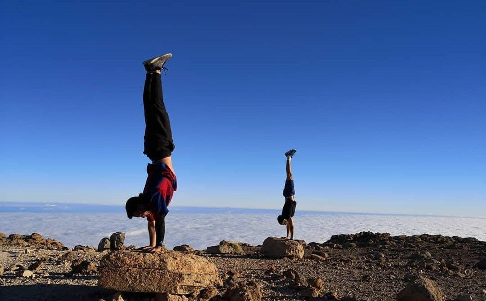

Inicialmente debemos tomarnos de la barra, con ambas manos y los brazos
extendidos. Las palmas de la mano deben quedar hacia adelante, es decir, en pronación.
Desde dicha posición jalamos con fuerza para elevar el cuerpo hasta que
el pecho quede a la altura de la barra y desde ahí, empujamos la misma mientras
culminamos de pasar el torso por encima de la barra.
Para comenzar el movimiento hay que colgarse de la barra de dominadas con una mano usando un banco y no saltando, ya que seguramente el agarre no será correcto. Elevarse hasta completar el recorrido del brazo (tocando el antebrazo con el bíceps) y tocando con el trapecio opuesto la barra de dominadas.
Para comenzar el ejercicio hay apoyar ambas palmas
de las manos en el suelo, separadas poco más allá del
ancho de los hombros, cerca de una pared donde colocaremos
los pies. Con los brazos extendidos, nos colocamos en
posición vertical mediante la contracción del abdomen.
Siempre con la espalda recta y las piernas juntas descendemos
lentamente mediante la flexión de brazos todo el cuerpo hasta
tocar el suelo con la cabeza por delante de las manos. Y lentamente
se regresa a la posición inicial para completar una repetición
del ejercicio.